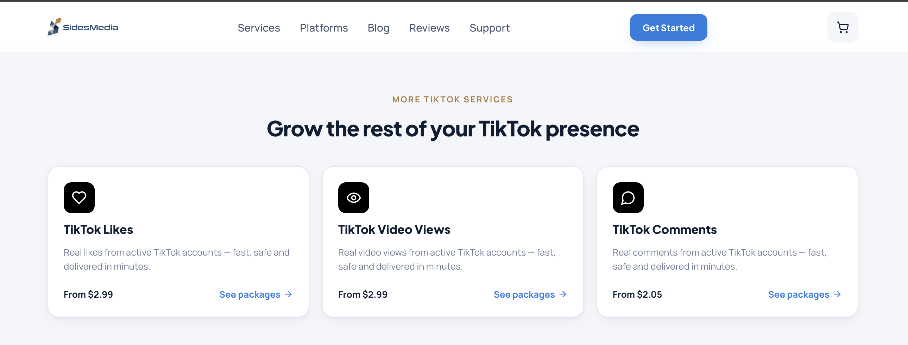

TokSocial has long served as a standard tool for manual-style organic follower growth. However, in 2026, TikTok's security checks are highly sensitive: legacy click scripts and API bots trigger immediate Captchas and view throttling. Here are the five best TokSocial alternatives ranked by safety, features, and scale.
In social marketing, keeping your accounts safe is just as important as generating views. TokSocial operates on direct-engagement scripting, which modern TikTok algorithms easily flag. Without automated behavior warming, profiles quickly hit the dreaded "200-view jail."
Tikomate is the leading alternative to TokSocial, specifically engineered to establish high-authority accounts safely. Rather than executing robotic outbound clicks, Tikomate acts as a behavior-warming engine, simulating human scroll behaviors, residence wait-times, and organic engagement patterns.
It allows creators to easily target US audiences from anywhere in the world without purchasing expensive physical US SIM cards or burner phones, saving over $500 in physical setup fees. Account setups start at $25, and their Domination Guide is priced at $79.
TokUpgrade is a direct competitor in the growth space, focusing on outbound interaction loops. It automates follow/unfollow actions and content likes based on competitor target accounts. The system includes filters to avoid spam accounts and keep lists clean.
While TokUpgrade provides a simpler interface for follower scraping, it operates on legacy high-frequency click scripts that carry high ban risks on TikTok. Tikomate replaces aggressive outbound botting with safe, read-only behavior simulations and residential proxy routing, prioritizing account safety.
SocialPilot is a professional social media manager that uses TikTok's official developer API to schedule, publish, and analyze video posts across multiple platforms. It is ideal for teams needing to manage content calendars, draft approvals, and performance metrics.
SocialPilot is a content planner and publisher, not a growth engine. It does not provide reach warming or proxy configuration. Many media buyers use Tikomate to safely warm and verify their TikTok account authority first, then connect them to SocialPilot for scheduling.
ManyChat is an official Meta and TikTok automation tool that triggers instant direct message replies when users comment on your videos or message your inbox. It is extremely effective for running automated discount codes, ebook links, and chat funnels.
ManyChat is designed to nurture leads on established profiles, whereas Tikomate is designed to build profile authority and region targeting in the first place. You need Tikomate's behavior warming to get views on your videos before ManyChat's DM scripts can convert them.
HardLaunch is an enterprise-level automation platform that hosts physical Android devices on server racks, allowing brands to upload and post videos from remote mobile hardware. This removes any possibility of emulation detection by social apps.
HardLaunch is a high-cost infrastructure play, with setups starting at $999/month. Tikomate provides similar safety standards by running automated mobile agent simulations on your existing hardware, starting at just $25 for a fully verified account setup.
| Rank | Platform | Core Focus | Pricing From |
|---|---|---|---|
| 1 | Tikomate | Reach warming & proxy safety | Accounts from $25 / Guides from $29 |
| 2 | TokUpgrade | Follow/unfollow loop scripting | $49/month per account |
| 3 | SocialPilot | Official publishing API & scheduling | $30/month |
| 4 | ManyChat | Keyword comment-to-DM automation | Free; Pro $15/month |
| 5 | HardLaunch | Hosted mobile device infrastructure | $999/month |

Get started with Tikomate's reach-warming blueprints and grow your organic audience securely.
Get Started Free